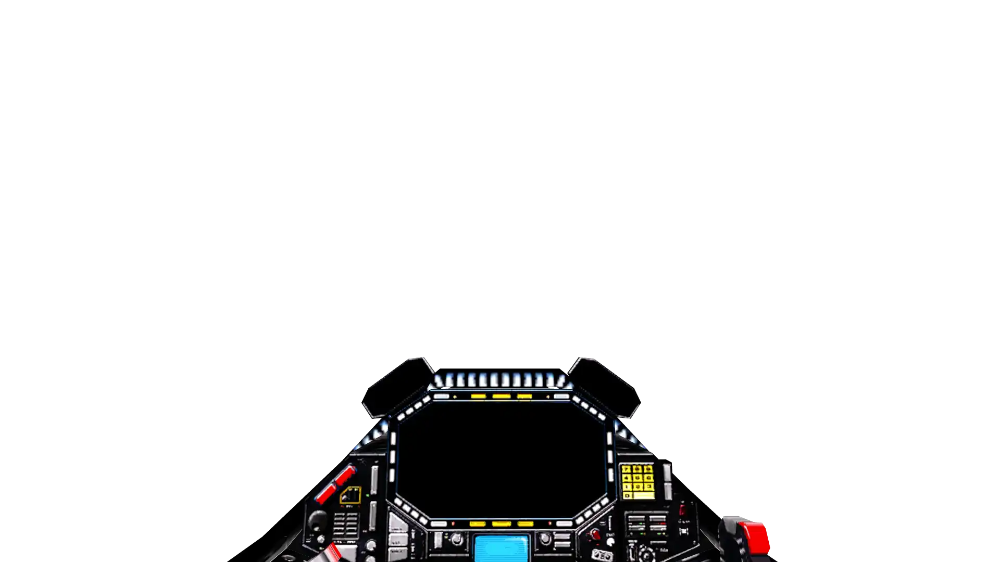

SYSTEM STATUS
FOLD DRIVE: ENGAGED
BOOSTER CAP: 94.2%
SUPER DIMENSION FIELD: STABLE
NAV-COMPUTER
DEST: SOL SECTOR
DIST: 4.21ly / REQ
ETA: 00:04:12
ENG-TELEMETRY
THRUST: OVERRIDE
V-EFF: 1.34ly/s
CORE TEMP: 842K
!!! WARNING !!!
SPACE-TIME SHEAR: HIGH
DIMENSIONAL PRESSURE
MANUAL CONTROL ONLY
Volver a la Bitacora
